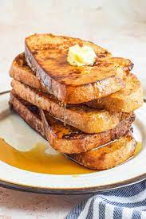

French Toast

French Toast Recipe
This quick easy recipe to make mouth watering French Toast!
Ingredients List
- 1 Egg
- Maple Syrup
- 1 Teaspoon Vanilla Extract
- 1/2 Teaspoon Ground Cinnamon
- 1/4 Cup Milk
- 4 Slices Heartly Sandwitch Bread
Instructions
- Whisk egg, vanilla and cinnamon in shallow dish. Stir in milk.
- Dip bread slices in egg mixture, turning to coat evenly on both sides.
- Cook bread slices on lightly greased nonstick griddle or skillet on medium heat until cooked through and browned on both sides.
- Add 1 teaspoon Pure Vanilla Extract and 1/4 teaspoon Ground Cinnamon to 1 cup of Maple Syrup.